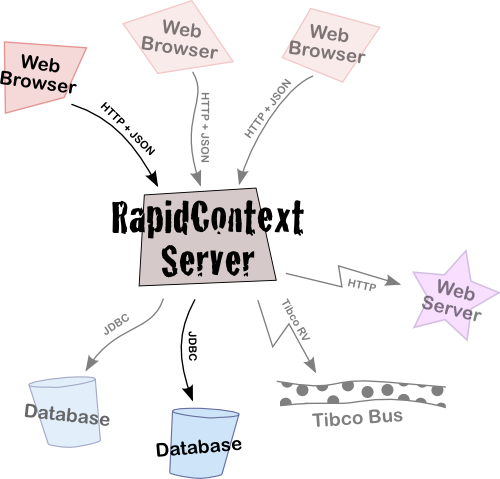

Introduction
RapidContext is a platform for creating rich dynamic web applications. The
platform consists of both a client and a server part, providing a simple,
safe and stable way to build applications that can connect to a wide range
of back-end services. The RapidContext platform provides a number of features
that are important when developing applications for the web:
- Simple Connectivity — Standard plug-ins
for accessing JDBC, HTTP, messaging buses and more is available.
Transactions and connection pooling is built-in from the start
and will be used whenever supported.
- Flexible Scripting — JavaScript is
supported both on the client and the server side, providing
advanced, standardized and flexible programming to implement
business logic and other non-trivial data flows.
- Extensible Architecture — The RapidContext
platform is built around a plug-in architecture, making it
possible to create new services and applications when the default
ones are not sufficient.
- Robust Security — User authentication,
authorization and auditing mechanisms are available to guarantee
the integrity of applications and data.
- Efficient Development — The platform
provides both structure and tools to simplify development,
testing and deployment of web applications.
1. Technologies
The client-side technologies used in RapidContext are JavaScript, HTML,
CSS and DOM (i.e. AJAX without XML) based on the
MochiKit JavaScript library.
All data transfers between the client and the server are encoded in the
JSON
data format as it is compact, efficient and well-suited to a
JavaScript environment. The RapidContext web applications normally run
without any page reloads.
On the server-side, the RapidContext server is implemented as a Java
Servlet (J2EE). Several Java technologies are included via libraries
and plug-ins, such as Mozilla Rhino (JavaScript), JDBC and more.
2. Deployment
RapidContext is normally deployed either as a stand-alone server or
inside a Java Servlet container, such as Jetty or Tomcat. The client
and server parts can be used without each other, although no special
provisions have been made to facilitate such a setup.

3. Concepts & Terminology

Information Not Updated
The information in this section has not been updated to the latest
version of RapidContext.
A number of terms are used repeatedly in the RapidContext platform and
documentation. Their definitions are as follows:
- Adapter — A connection communication handler
written in Java. The adapter controls all the communication over a
connection and defines which operations are available. Default
adapters for JDBC, HTTP and command-line program execution are
available, and other adapters can be loaded as plug-ins.
- App — A client-side application that
runs in the web browser, normally as a "tab" in the default user
interface. Apps are installed on the server, but executes solely
on the client. Multiple apps can be executing at the same time,
allowing the user to switch beween different tasks and transferring
data between the apps.
- Connection — A named link to a database or
another system. Each connection is managed by an adapter on the server.
The connection names and configuration parameters are defined in the
environment.
- Environment — A set of named connections on
the server. The environment stores the connection creation parameters
for the adapter and a pool of already established connnections. The
pool is continually monitored for stale connections and expands as
necessary.
- Plug-in — A ZIP file containing Java libraries,
procedures, apps, configuration or file data. A plug-in is the
standard way of installing additional applications or functionality
in a RapidContext server.
- Procedure — A server-side operation that can
be invoked from the client. The operation may take arguments, modify
data and/or return a value depending on implementation. New procedures
can easily be created in the Admin app.
Copyright © 2007-2012 Per Cederberg. All rights reserved.